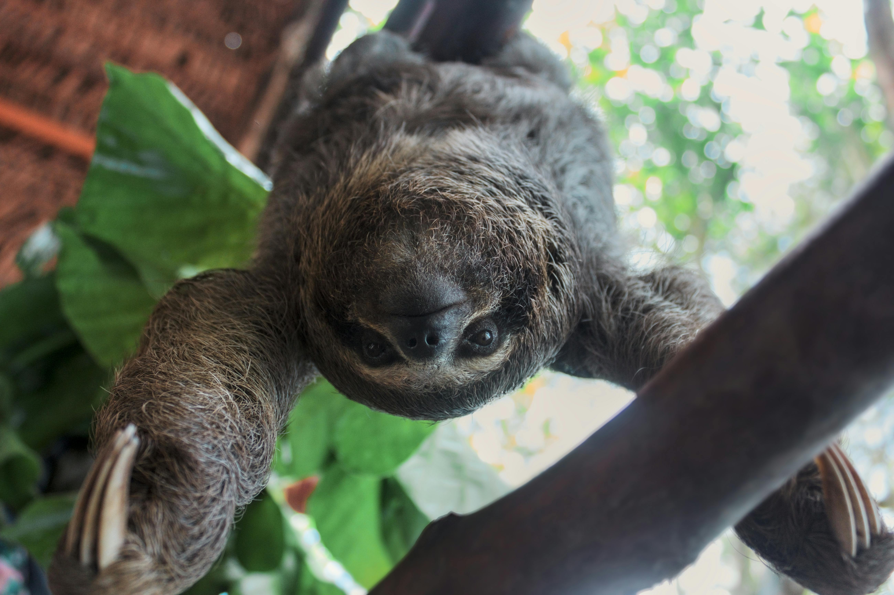
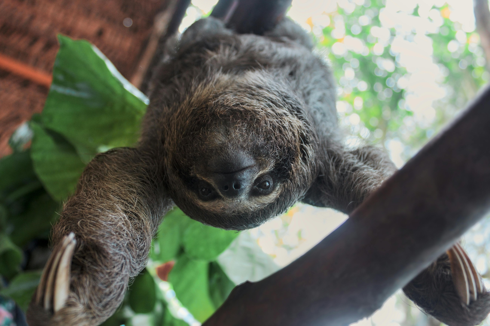

Who are Sloths?
 

Sloths are tree-dwelling mammals known for their slow movements, which help them conserve energy and avoid predators. There are six species of sloths divided into two families:
- Two-Toed Sloths (Choloepus): Larger and more active at night.
- Three-Toed Sloths (Bradypus): Smaller, diurnal, and equipped with a permanent "smile" due to their facial structure.
Unique Adaptations:
- Slow Metabolism: : Larger and more active at night.
- Three-Toed Sloths (Bradypus): Smaller, diurnal, and equipped with a permanent "smile" due to their facial structure.